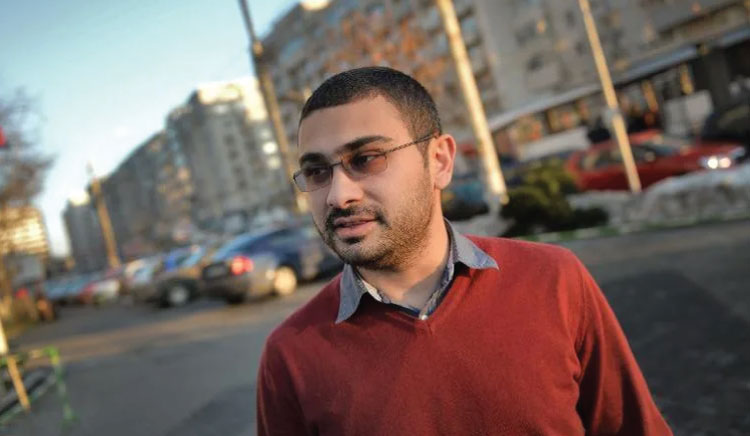

Сдружение „Ръка за ръка 8“ поставя сред най-високите си приоритети работа в подкрепа на повишаване на общественото съзнание срещу предразсъдъците спрямо ромите в българското общество и в рамките на ЕС.
Нашите виждания и усилия се базират на принципа, че равенството и недискриминацията са основни ценности на демократичните общества и ключови принципи на политиките на Европейския съюз. Въпреки съществуващите законови гаранции, обаче, много етнически малцинства в България, а и в ЕС, включително ромите, продължават да се сблъскват с предразсъдъци, стереотипи и социална дискриминация.
Ромите са най-голямото етническо малцинство в Европа, като около шест милиона от тях са граждани на държави-членки на ЕС. Поради исторически и социални причини ромската общност все още често е изправена пред социално изключване, което изисква целенасочени политики за интеграция и борба с дискриминацията.
Повишаването на общественото съзнание и преодоляването на негативните нагласи към ромите са ключови елементи на интеграционните политики както на национално, така и на европейско ниво.
Политиките на Европейския съюз за защита на малцинствата се основават на принципите на равенство, човешки права и социално включване. През 2020 г. Европейската комисия прие Стратегическата рамка на ЕС за равенство, приобщаване и участие на ромите (2020–2030). Тази стратегия поставя акцент върху борбата с дискриминацията и формулира цели и механизми за социално включване и активното участие на ромските общности в обществения живот.
В рамките на тази политика Европейският съюз насърчава държавите-членки да предприемат конкретни мерки срещу анти-ромските нагласи, речта на омразата и социалната стигматизация. През 2021 г. Съветът на ЕС прие препоръка, която подчертава необходимостта от активни политики за борба с дискриминацията срещу ромите и за насърчаване на равноправното им участие в обществото.
Европейските политики включват и инициативи за:
• образователни кампании за толерантност;
• насърчаване на междукултурния диалог;
• борба с расизма и речта на омразата в онлайн пространството;
• подкрепа за организации на гражданското общество, работещи с ромските общности.
Тези инициативи са част от по-широките политики на ЕС за равенство и социално включване.
В България основният стратегически документ в тази област е Националната стратегия на Република България за равенство, приобщаване и участие на ромите (2021–2030). Тя има за цел да подобри социалното положение на ромската общност и да насърчи равнопоставеността в обществото.
В синхрон с политиката на ЕС, националната ни стратегия включва мерки за:
• повишаване на обществената информираност относно ромската култура и история;
• борба с дискриминацията и езика на омразата;
• насърчаване на междукултурния диалог;
• участие на ромските общности в обществения и политическия живот.
Важна роля играят и институции като Комисията за защита от дискриминация, която разглежда случаи на дискриминация и провежда кампании за насърчаване на равнопоставеността. Освен това в България функционират областни и общински съвети по етническите и интеграционните въпроси, които подпомагат прилагането на интеграционните политики на местно ниво.
В България се осъществяват редица образователни инициативи за толерантност.
В училищата се реализират програми и кампании за междукултурно образование, които целят да насърчат толерантността и уважението към културното разнообразие. Тези инициативи подпомагат преодоляването на стереотипите и насърчават по-добро взаимно разбиране между различните етнически групи.
Много неправителствени организации в България реализират проекти, насочени към повишаване на общественото съзнание и борба с дискриминацията.
Инициативи, подкрепяни от европейски програми, насърчават ромските организации да реализират проекти, които популяризират европейските ценности, човешките права и участието на ромите в обществения живот. Чрез медийни кампании и обществени събития се популяризират позитивни примери за успешна интеграция на роми в различни сфери на обществения живот, което допринася за промяна на обществените нагласи.
Много държави членки на ЕС активно прилагат успешни модели за борба с дискриминацията и насърчаване на толерантността.
Европейските институции реализират информационни кампании, които насърчават уважението към културното многообразие и борбата с расизма.
В редица държави се прилагат образователни програми, които включват изучаване на културното наследство на различни етнически групи, включително ромите.
Европейските политики насърчават активното участие на ромските организации в процеса на разработване и прилагане на политики. Това допринася за по-ефективно представителство на интересите на ромската общност.
Въпреки съществуващите стратегии и програми, предразсъдъците и дискриминацията спрямо ромите остават сериозно предизвикателство както в България, така и в рамките на ЕС и Западните Балкани.
Основните все още незадоволително решени проблеми включват:
• негативни обществени стереотипи;
• реч на омразата в медиите и социалните мрежи;
• социална изолация на някои ромски общности.
За да бъдат по-ефективни политиките за равенство, е необходимо:
• по-активно участие на гражданското общество;
• развитие на образователни програми за толерантност;
• засилване на мерките срещу дискриминацията.
Повишаването на общественото съзнание и борбата с предразсъдъците спрямо ромите са ключови елементи за изграждането на по-справедливо и приобщаващо общество. Европейските политики и националните стратегии в България създават необходимата рамка за насърчаване на равенството и социалното включване.
Въпреки това, успешната интеграция на ромската общност изисква не само институционални мерки, но и активна промяна в обществените нагласи. Чрез образование, обществен диалог и участие на ромските общности може да се постигне устойчив напредък в борбата с дискриминацията и предразсъдъците.